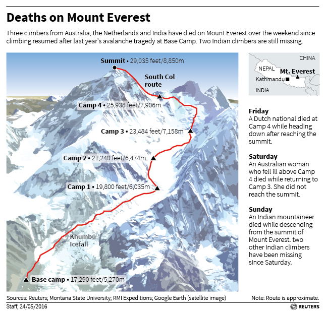
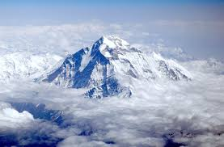
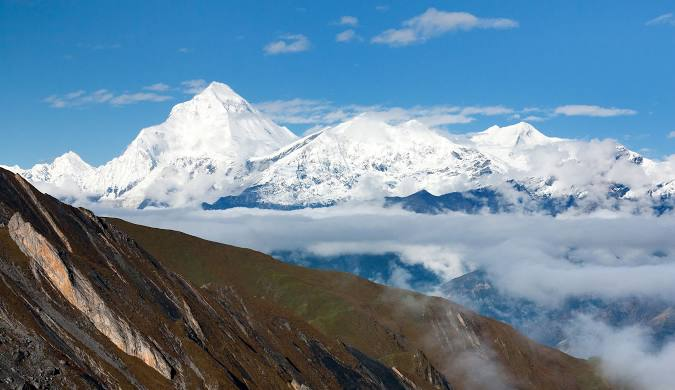
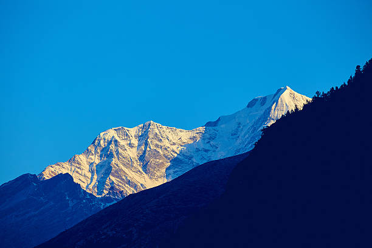

更新情報・お知らせ
- 2019/04/22
- テンプレートを使って初めて作成
- 2026/04/08
- 愛和システムエンジニア専門学校に入学。


Mt.Mount1953年に人類が初めてエベレストの頂上に到達して以来、世界最高峰への登山は劇的に変化した。今日では、知識や技術の進歩、そして商業的にガイドされた遠征隊が提供する充実したインフラのおかげで、毎年何百人もの登山家がこの偉業を成し遂げている。これらの遠征隊は、リスクと高額な費用を受け入れる覚悟のある人々にとって、まさに山頂への高速道路のような役割を果たしている。

Ganesh1953年に人類が初めてエベレストの頂上に到達して以来、世界最高峰への登山は劇的に変化した。今日では、知識や技術の進歩、そして商業的にガイドされた遠征隊が提供する充実したインフラのおかげで、毎年何百人もの登山家がこの偉業を成し遂げている。これらの遠征隊は、リスクと高額な費用を受け入れる覚悟のある人々にとって、まさに山頂への高速道路のような役割を果たしている。

Dhaulagiri1953年に人類が初めてエベレストの頂上に到達して以来、世界最高峰への登山は劇的に変化した。今日では、知識や技術の進歩、そして商業的にガイドされた遠征隊が提供する充実したインフラのおかげで、毎年何百人もの登山家がこの偉業を成し遂げている。これらの遠征隊は、リスクと高額な費用を受け入れる覚悟のある人々にとって、まさに山頂への高速道路のような役割を果たしている。

1953年に人類が初めてエベレストの頂上に到達して以来、世界最高峰への登山は劇的に変化した。今日では、知識や技術の進歩、そして商業的にガイドされた遠征隊が提供する充実したインフラのおかげで、毎年何百人もの登山家がこの偉業を成し遂げている。これらの遠征隊は、リスクと高額な費用を受け入れる覚悟のある人々にとって、まさに山頂への高速道路のような役割を果たしている。